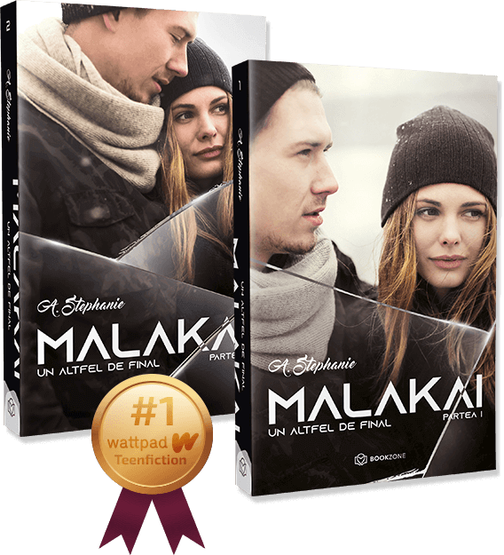

Îi poate oferi iubirea un altfel de final lui Malakai?
Cu un trecut dureros și un prezent tulbure, află dacă sufletul rătăcit al lui Malakai mai are puterea de a se contopi cu un alt suflet!
49 Lei
Cu un trecut dureros și un prezent tulbure, află dacă sufletul rătăcit al lui Malakai mai are puterea de a se contopi cu un alt suflet!
„O lectură profundă, o lecție de viață care te trece prin toate stările… Este despre cum să iubești necondiționat un suflet care nu mai are viață. Și cum să alegi între tine și persoana iubită care, deși e vie, nu mai găsește motive să trăiască.”
- BookNation
Pământul mereu s-a clătinat sub picioarele lui Malakai, destabilizând totul. Cu oamenii călcând mereu pe cioburi în preajma sa, a ucis părți din el ca să poată supraviețui în continuare și s-a schimbat la infinit, încercând să clădească ceea ce alții văd ca fiind normalitate, conștient că fundația lui e construită din nisip.
A rămas în viață datorită promisiunii pe care i-a făcut-o unei fete pe care a iubit-o acum mult timp. În majoritatea zilelor, se mulțumește doar să… respire.
Raven nu se aștepta să-l vadă într-unul dintre cele mai vulnerabile momente ale sale. El nu se aștepta ca ea să îl facă să se simtă așa cum nimeni nu a făcut-o vreodată, mai ales că a construit ziduri înalte care să-i țină pe ceilalți la distanță. Dar știe că există un loc în inima lui unde ar putea să o țină în siguranță pe Raven, asta doar dacă își permite să simtă...
„Raven mă sperie într-un mod pe care nu mi-l pot explica. Mă sperie cum pare să înțeleagă sentimente pe care nu știu cum să le explic, gânduri cărora nu le pot da glas.”
Raven a așteptat o vară întreagă un sărut cu Malakai, dar a meritat. Pentru că a fost acel gen de sărut care oprește totul pentru câteva secunde. Atât de intens, încât n-ai cum să ți-l scoți din minte sau din suflet vreodată.
Deși e aproape de întoarcerea la facultate, Raven își dă seama că nimic nu mai poate fi ca înainte. Știe că Malakai nu a fost niciodată destinația finală a cuiva, ci doar o oprire, însă își dă seama cât de rară e conexiunea dintre ei.
El e un băiat căruia i s-a demonstrat că e imposibil de iubit, dar s-a transformat într-un bărbat dispus să riște cu fiecare bucățică sfărâmată din inima sa, iar ea este o femeie care nu a găsit niciodată cuvintele potrivite ca să exprime ce simte în preajma lui.
Povestea a mai fost scrisă. Dar poate că de data asta va avea un altfel de final.
„[...] și știu că nu pot să-i șterg amintirile dureroase, dar pot face ca momentele în care i s-a frânt inima să devină, în timp, mai puține decât cele în care a fost fericit.”
„ Malakai mi-a ocupat gândurile în ultimele zile. Malakai m-a făcut praf și m-a făcut să strâng cărțile la piept și să suspin adânc de fiecare dată când le văd și recitesc pasaje. Malakai m-a cucerit total!”
– One girl. Thousand books.
În gimnaziu, Adina începea să cocheteze cu scrisul prin forma unui jurnal, iar în prezent, a adunat în portofoliul editurii Bookzone 4 bestselleruri sub numele de A. Stephanie. Vorbește cu mine a ajuns cel mai citit roman de pe Wattpad în 2016 și Malakai este cel mai apreciat roman în categoria #teenficton pe Wattpad, până în prezent. Când nu scrie, Adina are ca hobby-uri muzica, lectura și filmele de pe Netflix.